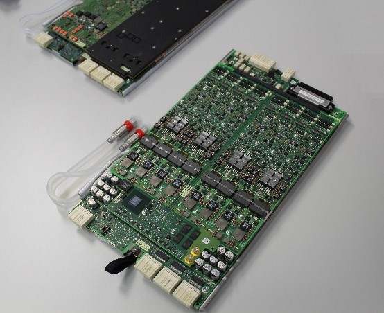
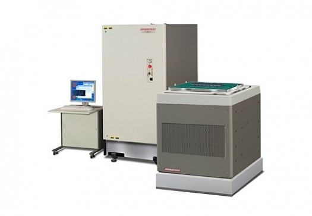

By GO SEMI & BEYOND Staff
The electronics industry evolves continually, introducing potentially disruptive technologies and driving new applications at a pace that requires companies to respond quickly and nimbly. Being able to recognize trends early on and provide solutions that can adapt to meet emerging demands is key to remaining competitive.
This is especially true of suppliers to the semiconductor ecosystem, including test and measurement solution providers, who must be able to meet the increasingly stringent testing requirements associated with devices developed for everything from smartphones and displays to AI and automotive applications.
A dominant trend is the demand for smart portable devices such as smartphones and tablets to deliver processing performance without significantly compromising battery life. A long battery-charging interval is a huge differentiator that can make or break even the most promising products and technologies. Simply put, people demand long battery life, but still crave faster, smaller, more feature-packed devices with power-hungry connectivity technologies like 5G.
However, solving one problem often produces another. This axiom applies to developing more sophisticated devices, where testing, especially system-on-chip (SoC) testing, has come up against such daunting challenges as higher voltages, data encryption, low-leakage battery-powered designs, more complex chips, and rapid development cycles. Yet test technology providers need to continue to meet the demand for low-cost solutions in high-volume manufacturing environments. Today, the testing space is defined by a broad range of different applications, requiring a similarly large variety of test methodologies. By looking ahead, companies can position themselves early on to benefit over the course of a product’s lifecycle.
Autonomous cars and e-mobility are leading trends that are under continuous development. These applications have evolved rapidly over the past few years, with the number of electronic components in today’s vehicles having rocketed into the near-triple digits. From infotainment (car navigation, center console control) to autonomous driving (image sensors, AI) to vehicle control (driving assistance, tire pressure monitoring, engine control), this market offers phenomenal potential, both current and future. The more innovations that are developed, the more markets created and the greater the demand. Ensuring automotive-grade, zero-defect quality is essential to guaranteeing safety, reliability, and market success.
Enabling high-quality testing
Advantest has a wide portfolio of solutions with the flexibility and capabilities essential for expanding into sectors where innovation is on the rise. These solutions are all designed to contribute to improving test quality and flexibility while lowering test costs.
The V93000 system is configurable to match device needs, providing DC, digital, analog and RF capabilities on one tester platform. As testing needs change and develop over time, the platform can adapt with the addition of new modules to expand functionality. The RF solution, for example, can accommodate a wide range of devices with varying levels of complexity (such as mobile phones, navigation systems, Wi-FI- and Bluetooth-enabled devices, and IoT systems) – testing up to 32 devices or RF ports in parallel.
Complementing the platform with the power analog FVI16 card enables flexible and transparent high-quality power testing (see Figure 1). The card, which is mainly used for automotive, industrial and consumer mobile charging applications, utilizes shorter test pulses, which prevents heating up the tested device and saves test time, and features a digital feedback loop design for accurate and reliable measurements. It also houses test processor technology with 16 units per card, enabling customers to run tests in parallel, time synchronized and with high throughput.
Figure 1: The V93000- FVI16 floating power VI source for testing power is used primarily in the automotive, industrial, and e-mobility markets. (Source: Charlene Perrin)
The Wave Scale RF, MX, and MX HR channel cards are used on the same platform for multi-site and in-site testing of RF and mixed-signal devices. The cards, which each have different capabilities, bandwidths and application targets, were specifically developed to be adaptable to future device test demands.
The T2000 test platform, with air and liquid dual capability, is also available for many different applications, including IoT/module test solutions, automotive and power-management IC (PMIC) solutions (Figure 2). This single test platform can cover all segments, including mobile charging technologies, automotive applications-specific standard products (ASSPs), and battery monitoring. It features high parallelism and multi-site test technology for measuring devices under test (DUTs). The platforms benefits, in addition to reducing test costs and time to market, include providing consistent quality and traceability.
Figure 2: The flexible T2000 test platform performs high-volume, parallel testing of a wide range of SoC devices. (Source: Advantest)
Primarily focused on the automotive and consumer markets, Advantest’s SoC pick-and-place handling systems handle fine-pitch devices while applying precise temperatures. The M4841 system features individual thermal accuracy with high reliability, contact force and throughput. It can operate across a wide temperature range, with very low jam rates. The M4872 has active thermal control with a vision alignment option and fast temperature boost. It also has high contact accuracy and high-power dissipation, to help optimize yield. This system provides failure detection for applications that demand the highest quality.
As technologies evolve into more demanding and complex systems with higher performance capabilities, the future of semiconductor testers will require ongoing development. Advantest is one company that intends to grow along with these and other future innovations, adhering to its strategy of keeping test costs low while delivering high-quality, reliable testing solutions.
